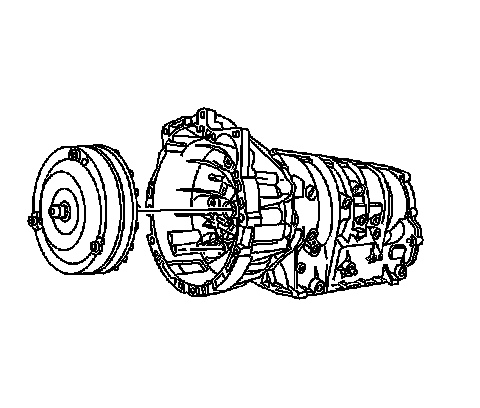
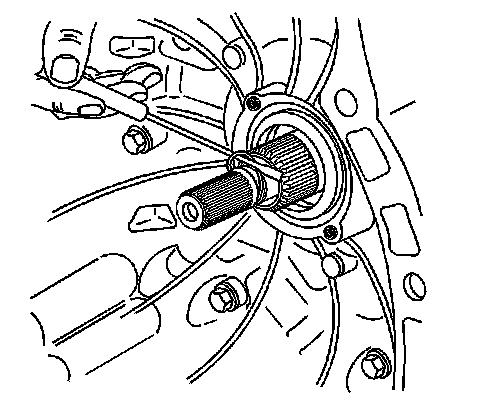
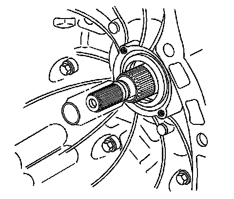

Torque Converter: Service and Repair
Torque Converter Replacement
Removal Procedure
1. Remove the transmission from the vehicle. Refer to Transmission Replacement (LY7 - Gas, 6 Cylinder, 3.6L, SFI, V6) (Removal and Replacement)Transmission Replacement (LH2 - Gas, 8 Cylinder, 4.6L, SFI, V8, DOHC, HO) (Removal and Replacement) .

2. Remove the torque converter from the transmission.

3. Remove the input shaft seal. Refer to Torque Converter Fluid Seal Replacement (Torque Converter Fluid Seal Replacement) .
Installation Procedure

Important: Take care to prevent cutting of the input shaft seal on the input shaft splines.
1. Install the input shaft seal. Refer to Torque Converter Fluid Seal Replacement (Torque Converter Fluid Seal Replacement) .
Important: Ensure the torque converter is fully seated into the transmission pump drive gear and turbine shaft.
2. Install the torque converter. Push the torque converter into position while rotating.
* The torque converter must be fully seated on the turbine shaft
* The torque converter must be fully seated in the pump drive gear
3. Install the transmission to the vehicle. Refer to Transmission Replacement (LY7 - Gas, 6 Cylinder, 3.6L, SFI, V6) (Removal and Replacement)Transmission Replacement (LH2 - Gas, 8 Cylinder, 4.6L, SFI, V8, DOHC, HO) (Removal and Replacement) .
Important: It is recommended that transmission adaptive pressure (TAP) information be reset.
Resetting the TAP values using a scan tool will erase all learned values in all cells. As a result, The ECM, PCM or TCM will need to relearn TAP values. Transmission performance may be affected as new TAP values are learned.
4. Reset the TAP values. Refer to Control Module References (Programming and Relearning) .